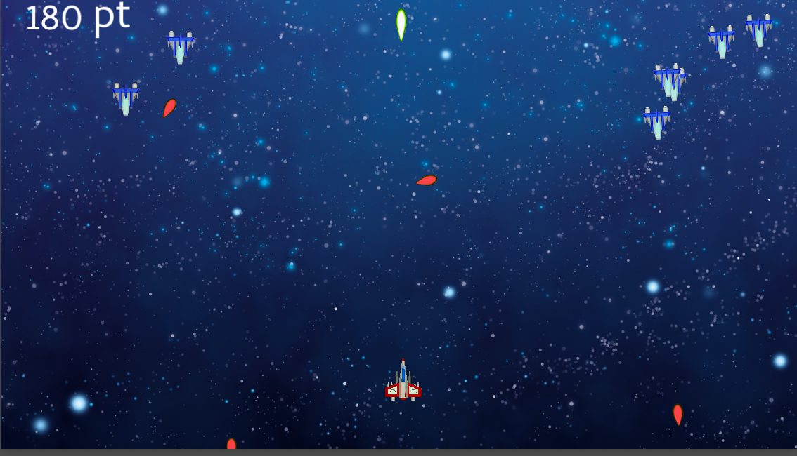
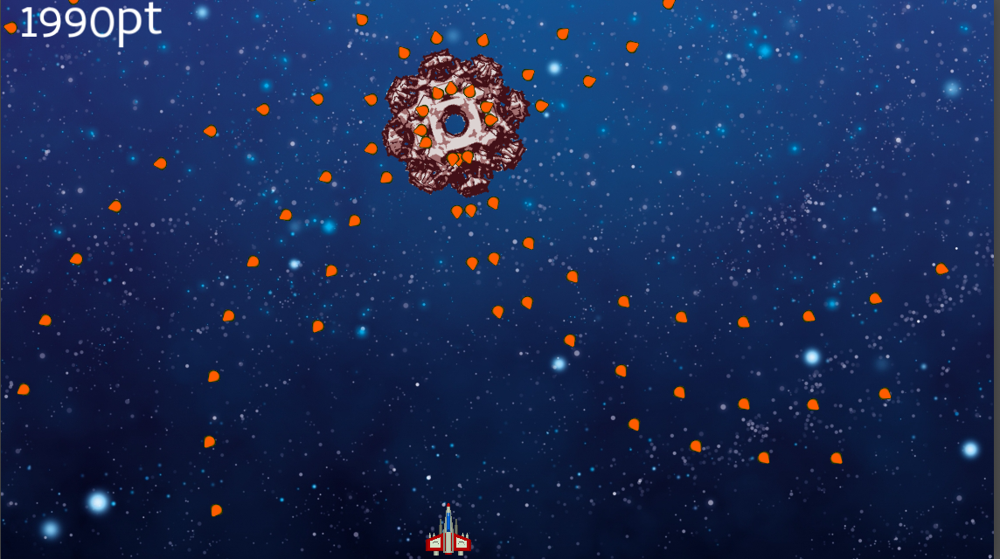
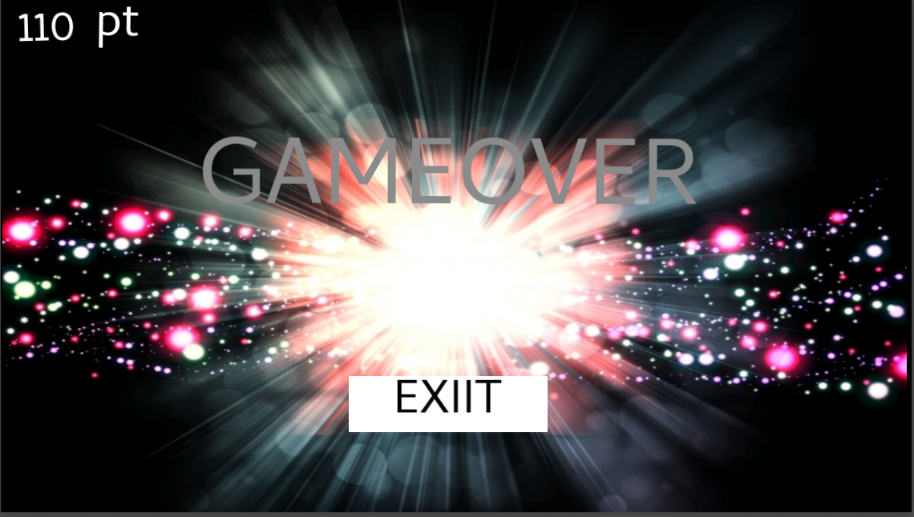

作品紹介 スペースシューター
九州デザイナー学院 ゲームクリエイター学科 ゲームプログラム専攻 村上佳樹



開発環境
gamesalad
制作期間
6ヶ月
ジャンル
シューティングゲーム
操作方法
タッチ操作
作品紹介
初めて制作した2Dシューティングゲームになります。
クリア条件は一定時間後に現れるボスを撃破するとゲームクリアになります。
ゲームオーバー条件は自機が敵機や敵弾に当たったらゲームオーバーになります。
ノンプログラムで制作できるのですが、ゲームを作る難しさを実感しました。
Menu
Home
はじめに
自己紹介
自己PR
作品集
シティラン
トレジャーハンター
スペースウォーズ
バルーンファイター
スペースシューター
連絡先
kdg.yoshiki.murakami@gmail.com
(090) 5742-8188
福岡県福岡市博多区博多駅前3-8-24 九州デザイナー学院在籍
TN (0120) 474-923